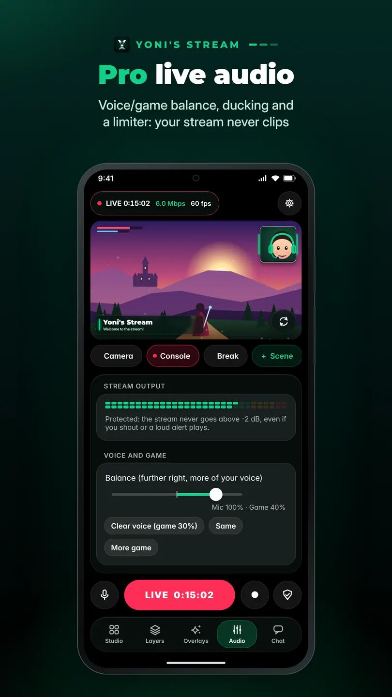
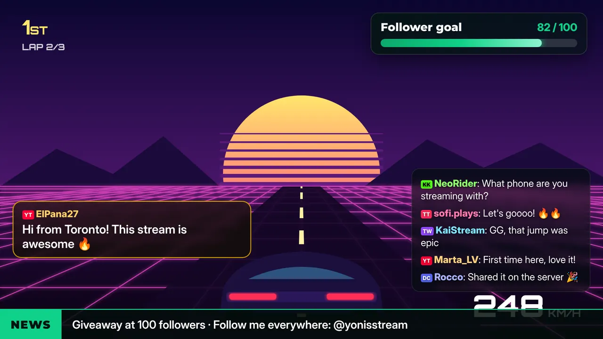

Live IRL trên Twitch và YouTube với overlay trực tiếp ngay từ điện thoại
Tải trên Google Play17 ngôn ngữ. Yêu cầu Android 10 trở lên và RAM tối thiểu 3 GB.
TRỰC TIẾP 6.0 Mbps · 60 fps
Yoni's StreamYoni's Stream biến điện thoại Android thành một studio sản xuất hoàn chỉnh: cảnh, layer, mixer âm thanh, alert và multistream, không cần máy tính.
Cuộn xuống để lên sóng
STUDIO TRONG TÚIOVERLAY TRỰC TIẾPMULTISTREAM VÀ QUAYÂM THANH CHUYÊN NGHIỆPMÁY CHƠI GAME, CAPTURE CARD VÀ CAMERATRỢ LÝ THÔNG MINHSTUDIO TRONG TÚIOVERLAY TRỰC TIẾPMULTISTREAM VÀ QUAYÂM THANH CHUYÊN NGHIỆPMÁY CHƠI GAME, CAPTURE CARD VÀ CAMERATRỢ LÝ THÔNG MINH
STUDIO TRONG TÚIOVERLAY TRỰC TIẾPMULTISTREAM VÀ QUAYÂM THANH CHUYÊN NGHIỆPMÁY CHƠI GAME, CAPTURE CARD VÀ CAMERATRỢ LÝ THÔNG MINHSTUDIO TRONG TÚIOVERLAY TRỰC TIẾPMULTISTREAM VÀ QUAYÂM THANH CHUYÊN NGHIỆPMÁY CHƠI GAME, CAPTURE CARD VÀ CAMERATRỢ LÝ THÔNG MINH
Ảnh chụp màn hình
Nhìn vào bên trong
Ngôn ngữ ảnh chụp
STUDIO TRONG TÚICảnh nhiều layer: camera sau và trước, màn hình và game trên điện thoại, hình ảnh, video, chữ, trình duyệt và chat.
MULTISTREAM VÀ QUAYPhát lên nhiều nền tảng cùng lúc qua RTMP, RTMPS hoặc SRT: Twitch, YouTube, Kick, TikTok LIVE, Instagram Live, Facebook, X hoặc máy chủ riêng.
OVERLAY TRỰC TIẾPAlert tự động cho sub, bits, raid, Super Chat, hội viên, Kicks và quà TikTok, kèm âm thanh và hiệu ứng (pháo giấy, trái tim, pháo hoa…).
MÁY CHƠI GAME, CAPTURE CARD VÀ CAMERAPS5 và PS4 qua Wi-Fi không cần capture card, PC có OBS hoặc điện thoại khác làm máy phát.

ÂM THANH CHUYÊN NGHIỆPCân bằng giọng/game, ducking, khử tiếng ồn, compressor và limiter đầu ra.
OVERLAY TRỰC TIẾPChat Twitch, YouTube, Kick, TikTok và Discord gộp chung trên buổi live, có đọc to.
STUDIO TRONG TÚIKhung ngang 16:9 và dọc 9:16 cùng lúc, cho TikTok, Instagram và YouTube Shorts.
TRỢ LÝ THÔNG MINHGợi ý chất lượng, âm thanh và vị trí camera theo game hoặc hoạt động và kết nối của bạn.
Tính năng
Mọi thứ buổi live của bạn cần
Live IRL trên Twitch và YouTube với overlay trực tiếp, ngay từ điện thoại của bạn. Quay video có overlay như dân chuyên nghiệp.
01 / 06
STUDIO TRONG TÚI
Cảnh nhiều layer: camera sau và trước, màn hình và game trên điện thoại, hình ảnh, video, chữ, trình duyệt và chat.
Chế độ studio có xem trước và hiệu ứng chuyển cảnh: cắt, mờ dần, trượt, di chuyển và stinger.
Khung ngang 16:9 và dọc 9:16 cùng lúc, cho TikTok, Instagram và YouTube Shorts.
Lá chắn riêng tư: che buổi live khi có cuộc gọi hoặc khi bạn thoát game.
02 / 06
OVERLAY TRỰC TIẾP
Thanh, chữ tiêu đề, chữ chạy, mục tiêu, đếm ngược và mạng xã hội của bạn, với hơn 2000 phông chữ.
Alert tự động cho sub, bits, raid, Super Chat, hội viên, Kicks và quà TikTok, kèm âm thanh và hiệu ứng (pháo giấy, trái tim, pháo hoa…).
Lệnh chat để người xem kích hoạt hiệu ứng và âm thanh.
Chat Twitch, YouTube, Kick, TikTok và Discord gộp chung trên buổi live, có đọc to.
Xuất overlay sang OBS và Streamlabs, hoặc nhập overlay của bạn.
03 / 06
MULTISTREAM VÀ QUAY
Phát lên nhiều nền tảng cùng lúc qua RTMP, RTMPS hoặc SRT: Twitch, YouTube, Kick, TikTok LIVE, Instagram Live, Facebook, X hoặc máy chủ riêng.
Quay đến 4K 60 fps có tạm dừng và lưu clip vài giây gần nhất.
H.264 và HEVC bằng phần cứng, bitrate thích ứng và tự kết nối lại.
Kiểm soát nhiệt và pin cho những buổi live nhiều giờ.
0 dB−6−12−24−48
04 / 06
ÂM THANH CHUYÊN NGHIỆP
Mixer cho micrô, âm thanh trong game và ứng dụng, nhạc và hiệu ứng âm thanh.
Cân bằng giọng/game, ducking, khử tiếng ồn, compressor và limiter đầu ra.
Cấu hình sẵn: game và giọng nói, trò chuyện, podcast, nhạc nền, ASMR và IRL ngoài đường.

05 / 06
MÁY CHƠI GAME, CAPTURE CARD VÀ CAMERA
Capture card USB (UVC), kể cả Elgato.
PS5 và PS4 qua Wi-Fi không cần capture card, PC có OBS hoặc điện thoại khác làm máy phát.
Camera IP qua RTSP và camera hành trình qua RTMP.
Elgato Stream Deck qua USB và nút tắt trên màn hình.
1080p60 fps6.0 MbpsH.26448 kHzHEVC
06 / 06
TRỢ LÝ THÔNG MINH
Gợi ý chất lượng, âm thanh và vị trí camera theo game hoặc hoạt động và kết nối của bạn.
Cả trên máy tính bảng
Canvas, bảng điều khiển và nút bấm hiện cùng lúc.
GÓI
Không có gói: chuẩn bị cảnh và overlay.
Dùng thử miễn phí 5 ngày (tài khoản mới): live và quay đến 1080p 30 fps, 2 giờ mỗi ngày.
Deluxe Studio: đến 1080p 60 fps, 5 giờ live mỗi ngày, multistream lên 3 nền tảng và tự kết nối lại.
Streamer: mọi thứ không giới hạn (4K60, cảnh và overlay không giới hạn, mọi nền tảng, Stream Deck, capture card và camera chuyên nghiệp, mọi phông chữ, cấu hình âm thanh, bộ lọc, trợ lý và đọc chat).
Gói đăng ký tự gia hạn hằng tháng và bạn có thể hủy bất cứ lúc nào trên Google Play.
QUYỀN RIÊNG TƯ
Không quảng cáo, không theo dõi. Video của bạn chỉ đến các nền tảng bạn chọn; cảnh và khóa stream nằm trên điện thoại và, nếu muốn, trong Google Drive của chính bạn.
Nói ngôn ngữ của bạn
17 ngôn ngữ. Yêu cầu Android 10 trở lên và RAM tối thiểu 3 GB.